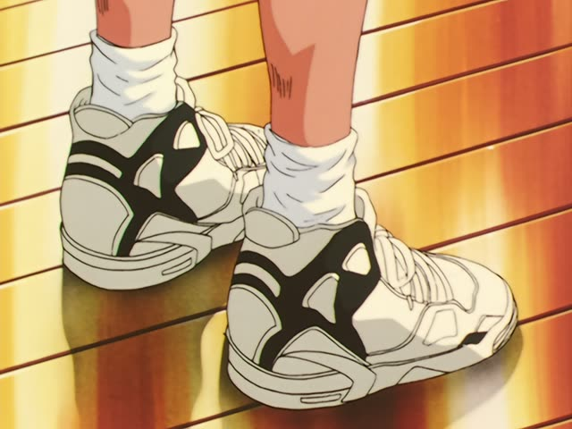

～たり～たりする
Kekkon Dekinai Otoko · Episode 9
急に生活環境が変わると体調崩したりしますよね。
"When your surroundings change suddenly, you can get sick and things like that."
たり～たりする lists actions as examples: "things like A and B". There's more, these are just a few.
Take the past form and add り: 崩した → 崩したり. Then end with する, which carries the tense and the politeness: します. On this card there's only one たり: "getting sick, and that kind of thing". One たり hints there could be other problems too.
Compare て: 行って、行きました lists everything, in order. たり just picks a few examples.
Dungeon Meshi · Episode 8
手紙書いたり 本読んだり。
"Writing letters, reading books..."
たり lists a few things you do, as examples. On this card, she says what she did: 書いた → 書いたり, 読んだ → 読んだり. The する at the end is left out.
Quick Examples
A coworker asks about your weekend.
週末は、本を読んだり、映画を見たりしました。
"On the weekend I read, watched movies, that sort of thing."
読んだ → 読んだり. 見た → 見たり.
PoliteA friend asks what you do on the train.
音楽を聞いたり、寝たりしてる。
"I listen to music, sleep, stuff like that."
してる = している, casual.
CasualTalking about the weather.
最近、雨が降ったり止んだりしています。
"Lately it keeps raining on and off."
Two opposites: back and forth.
PoliteSomeone asks about your days off.
休みの日は、料理をしたりする。
"On my days off I do stuff like cooking."
One たり is fine too: "things like cooking".
CasualWith and without
本を読んで、映画を見ました。
"I read a book, then watched a movie." That's what I did, in order.
本を読んだり、映画を見たりしました。
"I read, watched movies, that kind of thing." Just examples, there was more.
Examples from Media

YouTube · video
その後も、ちょっと歩いたり見たりして、時間を潰しました。
"After that I walked around and looked at things, killing time."
Brush Up Life · Episode 1
次どこに生まれ変わるとかって分かったりしますか？
"Can you tell things like where you'll be reborn next?"
One たり, softening the question: "do you know, say...?"
Odd Taxi · Episode 6
何かお金に困ってたりしないですか？
"You're not having money troubles or anything, are you?"
困ってたり (from 困っていたり) + しない: "not having trouble or something". たり makes the question softer.


Shirokuma Cafe · Episode 4
くちばしでつついたり…
"Pecking with its beak and stuff..."
Samurai Champloo · Episode 19
何回も追いかけられたり捕まったりしたんだ。
"I got chased and caught lots of times."
Two たり + した: a few examples of what happened.

Shirokuma Cafe · Episode 8
ファンレターとか、届いたりして
"We get fan letters and things."

Slam Dunk · Episode 55
走ったり 跳んだりできるの？
"Can you even run and jump?"
走ったり跳んだりする: run, jump and so on. Here できる ("can") takes the place of する.
Further Reading
A Dictionary of Basic Japanese Grammar
Entry "~tari ~tari suru" · pp. 458–461
Tae Kim's Guide to Japanese Grammar
Compound Sentences · Multiple actions or states using 「～たりする」